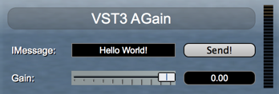
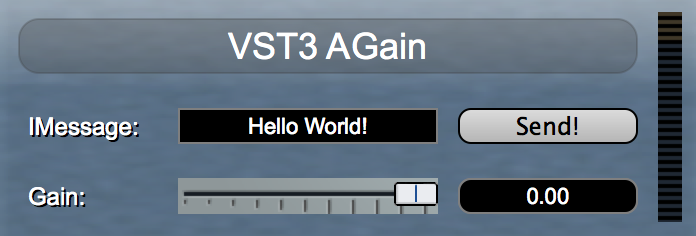
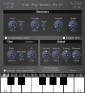
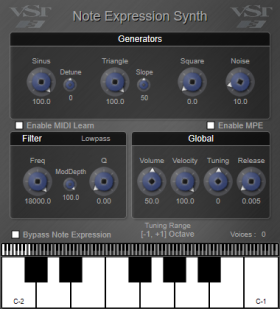
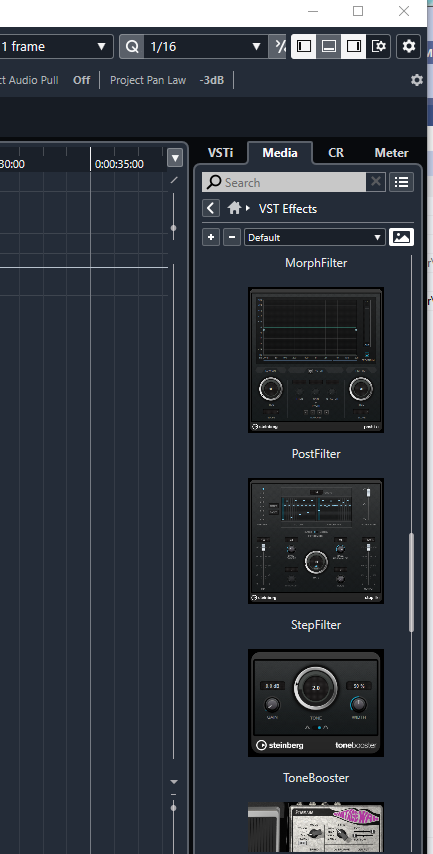

/ VST Home / Technical Documentation
[3.6.10] UI Snapshots
On this page:
Related pages:
Introduction
Since VST 3.6.10, a VST 3 bundle can contain pre-rendered snapshot images for a VST 3 host as a visual representation of the plug-in UI.
- This snapshot must have a predefined format and file name so that a host can recognize it.
- The image format must be PNG
- The image needs to be located inside the bundle directory in the folder Resources/Snapshots/ The file name must start with the unique ID of the audio processor printed in the form 84E8DE5F92554F5396FAE4133C935A18 followed by the string _snapshot and optionally followed by the HiDPI scale factor _2.0x and ending with the file extension .png.
- For example, again's snapshot must be named:
- 84E8DE5F92554F5396FAE4133C935A18_snapshot.png
- 84E8DE5F92554F5396FAE4133C935A18_snapshot_2.0x.png for the 2x scaled HiDPI variant.
- If the HiDPI scale factor is omitted, a scale factor of 1 is used.
Examples
AGain

84E8DE5F92554F5396FAE4133C935A18_snapshot.png

84E8DE5F92554F5396FAE4133C935A18_snapshot_2.0x.png
Note Expression Synth

6EE65CD1B83A4AF480AA7929AEA6B8A0_snapshot.png

6EE65CD1B83A4AF480AA7929AEA6B8A0_snapshot_2.0x.png
How Cubase uses Snapshots

In the Right Zone under the Media Tab, the user can choose FXs and Instruments using the snapshots.